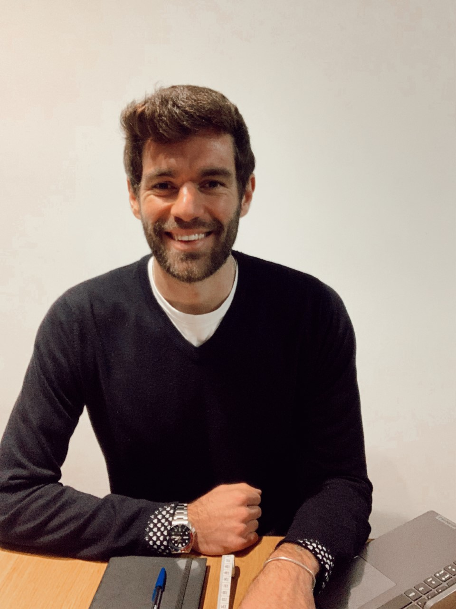

SOBRE MÍ
Albert Germà. Dietista y quiromasajista.
Una forma de trabajar basada en el rigor, la personalización y la educación nutricional.

MI FORMA DE TRABAJAR
No quiero darte una dieta. Quiero ayudarte a entender tu alimentación.
Creo que una buena intervención nutricional debe encajar en la vida de la persona que la realiza. Por eso intento adaptar al máximo cada proceso, explicar el porqué de las decisiones y revisar qué funciona y qué necesita cambiar.
Mi objetivo es que el paciente gane herramientas y autonomía, no que dependa para siempre de un menú cerrado.
CFGS en DietéticaFormación reglada en dietética.
Nutrición Deportiva · UOCCurso Profesionalizador en Nutrición Deportiva.
Máster en Obesidad y Enfermedades CardiometabólicasSegún el Método CORE de Ismael Galancho Reina.
Quiromasaje · Escuelas CIM BarcelonaFormación profesional en quiromasaje.
7 años de experienciaAcompañando procesos de nutrición y bienestar.